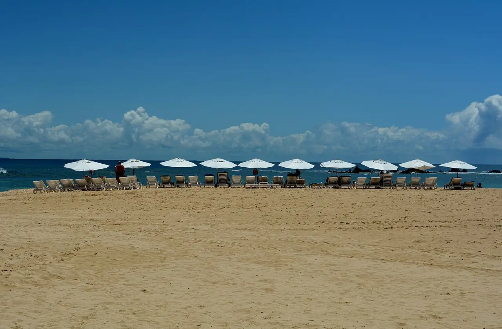

Morro de São Paulo — Segunda Praia
Bahia, Brésil · baignade, snorkeling

Village sans voitures sur l’île de Tinharé, au sud de Salvador. Les plages numérotées se succèdent ; à marée basse, des piscines naturelles se forment entre les récifs.
- Lieu
- Bahia, Brésil
- Niveau
- Débutant
- Activités
- baignade, snorkeling
- Type d'eau
- Mer / océan
- Coordonnées
- -13.38, -38.91 (position approximative du secteur)
Dangers à connaître
- Récifs et rochers à fleur d’eau : chaussons conseillés.
- Passage de bateaux et de catamarans près des plages.
Le conseil d'Ocean Buddy
Vérifie la table des marées : les piscines naturelles se découvrent à marée basse et la mer remonte vite.
Ouvrir dans Ocean Buddy Télécharger sur l'App Store
Source : Fiche Ocean Buddy · septembre 2026 · à vérifier localement.